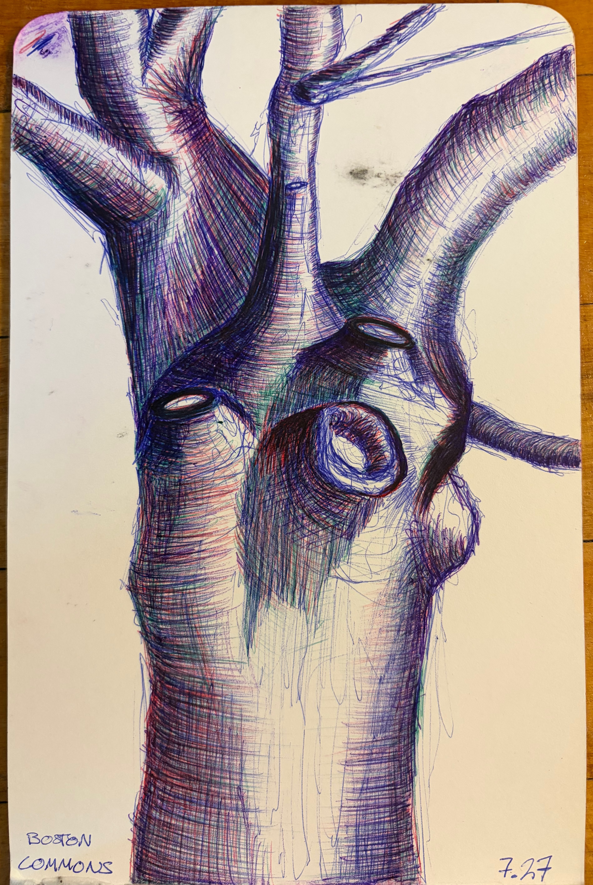

Drawing of a tree from Boston Commons, where I spent a beautiful summer day in the park with close friends on a picnic blanket under this tree. I really enjoyed drawing with three different colors and using the interactions between them to give more depth to the drawing.
